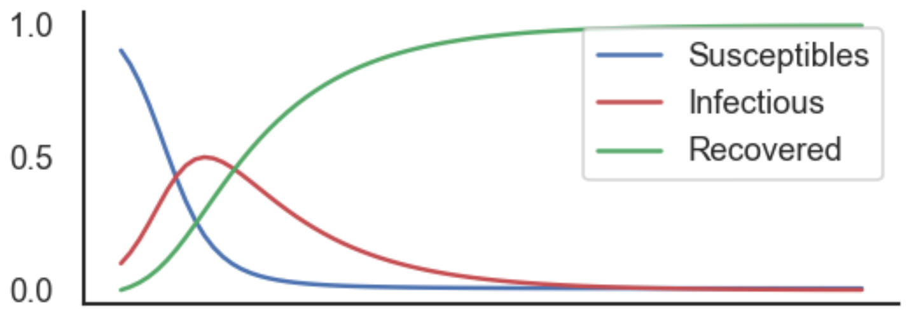

Introducción a los modelos de epidemias
Modelos SIR y modelos de metapoblaciones
Miguel Ponce de Leon miguel.ponce@bsc.es
2026-05-05
Modelo SIR clásico
\[
N = S + I + R
\]
Dinámica del modelo SIR
\(\frac{dS}{dt} = -\beta \frac{S I}{N}\)
\(\frac{dI}{dt} = \beta \frac{S I}{N} - \gamma I\)
\(\frac{dR}{dt} = \gamma I\)
Intuición
- La infección ocurre por contacto entre \(S\) e \(I\)
- Recuperación ocurre a tasa constante \(\gamma\)
- Mezcla homogénea (todos con todos)
Número reproductivo básico
\[
R_0 = \frac{\beta}{\gamma}
\]
- \(R_0 > 1\): epidemia crece
- \(R_0 < 1\): epidemia desaparece
Dinámica típica
- Crecimiento inicial exponencial
- Pico epidémico
- Disminución por agotamiento de susceptibles

Limitaciones del modelo SIR
- No hay estructura espacial
- Mezcla homogénea poco realista
- No incluye movilidad
Pregunta clave
¿Qué pasa si las personas se mueven entre regiones?
Hacia modelos más realistas
- Introducir estructura espacial
- Introducir movilidad
- Modelar interacciones entre regiones (datos!)
Esto nos lleva al modelo metapoblacional
Subpoblaciones por movilidad
- Individuos definidos por origen-destino: \(i \to j\)
\[
N_{ji}^{(\mathrm{pop})} = p_{ji} \, N_i^{(\mathrm{pop})}
\]
- Probabilidad de commuting:
\[
p_{ji} = \frac{F_{ji}}{\sum_j F_{ji}}, \quad \sum_j p_{ji} = 1
\]
Variables del modelo
Para cada subpoblación \(i \to j\):
- \(S_{ji}\): susceptibles
- \(I_{ji}\): infectados
- \(R_{ji}\): recuperados
Idea clave
- Cada individuo:
- Vive en \(i\)
- Se desplaza a \(j\)
- Mezcla en dos entornos:
Fuerza de infección
En el hogar
\[
\lambda_i^{\text{home}} = \frac{\beta}{2} \frac{\sum_k I_{ki}}{\sum_k N_{ki}^{(\mathrm{pop})}}
\]
En el destino
\[
\lambda_j^{\text{work}} = \frac{\beta}{2} \frac{\sum_k I_{jk}}{\sum_k N_{jk}^{(\mathrm{pop})}}
\]
Dinámica de la epidemia
Susceptibles
\(\frac{dS_{ji}}{dt} = - S_{ji} (\lambda_i^{\text{home}} + \lambda_j^{\text{work}})\)
Infectados
\(\frac{dI_{ji}}{dt} = -\gamma I_{ji} + S_{ji}(\lambda_i^{\text{home}} + \lambda_j^{\text{work}})\)
Dinámica de recuperados
\(\frac{dR_{ji}}{dt} = \gamma I_{ji}\)
Interpretación
- Mezcla homogénea dentro de cada localización
- Incluye residentes y commuters
- Transmisión depende de:
- Prevalencia local
- Flujos de movilidad
Rol de la movilidad
- Define acoplamiento entre regiones
- Permite transmisión a larga distancia
- Genera estructura de red
Simulación estocástica
Transiciones
\[
\Delta(S_{ji} \to I_{ji}) \sim \text{Binom}(S_{ji}, P(\Delta t; \lambda_{ji}))
\]
\[
\Delta(I_{ji} \to R_{ji}) \sim \text{Binom}(I_{ji}, P(\Delta t; \gamma))
\]
Probabilidad de infección:
\[
P(\Delta t; \lambda_{ji}) = 1 - e^{-\lambda_{ji} \Delta t}
\]
Modelando reducción de movilidad
Factor de reducción:
\[
\kappa_i = \frac{\sum_k (F_{ki}(T_L) + F_{ik}(T_L))}{\sum_k (F_{ki}(T_0) + F_{ik}(T_0))}
\]
Escenario 1: aislamiento
- Fracción \(1 - \kappa_i\) se elimina de la dinámica
- Se mueve a compartimento \(R\)
Escenario 2: distanciamiento
\[
\beta_i = \kappa_i \beta
\]
Nueva fuerza de infección
\[
\lambda_i^{\text{home}} = \frac{\beta_i}{2} \frac{\sum_k I_{ki}}{\sum_k N_{ki}^{(\mathrm{pop})}}
\]
\[
\lambda_j^{\text{work}} = \frac{\beta_j}{2} \frac{\sum_k I_{jk}}{\sum_k N_{jk}^{(\mathrm{pop})}}
\]
Intuición final
La epidemia se propaga porque los individuos viven en un lugar pero interactúan en otro.
Mensaje clave
- La movilidad estructura la transmisión
- No es solo un modelo SIR
- Es un sistema acoplado en red
Discusión
- ¿Qué pasaría sin commuting?
- ¿Qué supuestos son más críticos?
- ¿Cómo cambiaría con heterogeneidad?
Del modelo a la implementación
- El código implementa un modelo SIR metapoblacional
- Cada individuo tiene:
- Lugar de residencia (i)
- Lugar de trabajo (j)
👉 Se modela con una matriz (M M)
Estructura de la población
\[
N_{ij}
\]
Interpretación:
- Fila (i): donde vive
- Columna (j): donde trabaja
Ejemplo conceptual
| Vive 1 |
(N_{11}) |
(N_{12}) |
| Vive 2 |
(N_{21}) |
(N_{22}) |
👉 Cada celda es una subpoblación
Dinámica de infección
Cada individuo puede infectarse en:
- 🏠 Hogar (i)
- 🏢 Trabajo (j)
Fuerza de infección
En el hogar:
\[
\lambda_i^{home} \propto \\frac{I \\text{ en } i}{N \\text{ en } i}
\]
En el trabajo:
\[
\lambda_j^{work} \propto \\frac{I \\text{ en } j}{N \\text{ en } j}
\]
Supuesto clave
Tiempo dividido en dos:
50% hogar
50% trabajo
Implementación en código
lambda_home = 0.5 * beta * I_home / N_home
lambda_work = 0.5 * beta * I_work / N_work
Introduciendo cuarentena en el modelo
- Queremos modelar reducción de movilidad
- Se define un factor:
\[
\kappa = \frac{\text{movilidad actual}}{\text{movilidad base}}
\]
- Valores:
- ( = 1 ): sin cambios
- ( < 1 ): reducción de movilidad
Dos mecanismos de lockdown
El modelo considera dos mecanismos distintos:
- Aislamiento
- Distanciamiento
Importante: representan procesos físicos diferentes
Dos mecanismos de lockdown
Escenario 1: Aislamiento
self.S = population * kappa
self.R = population * (1 - kappa)
Escenario 1: Distanciamiento
lambda_home_eff = kappa * lambda_home
lambda_work_eff = kappa * lambda_work
Instrucciones para instalar EpiCommute
- Abrimos la terminar y nos conectamos al servidor
- Entramos en la carpetta del curso (
cd mini-course-scicomp)
- Activamos el venv
- Instalar EpiCommute:
- Descargamos Epicommute:
git clone https://github.com/franksh/EpiCommute.git
- Acedemos a la carpeta del paquete:
cd EpiCommute
- Instalamos el paquete en el venv:
python setupy.py install
- Probamos que se instaló de forma correcta:
python -c "import EpiCommute"
- Si no hay mensajes de erro es que fue todo OK!
Ejercicio 1
Ejecuta la simulación básica.
Preguntas:
- ¿qué representa cada región?
- ¿cómo se propaga la epidemia?